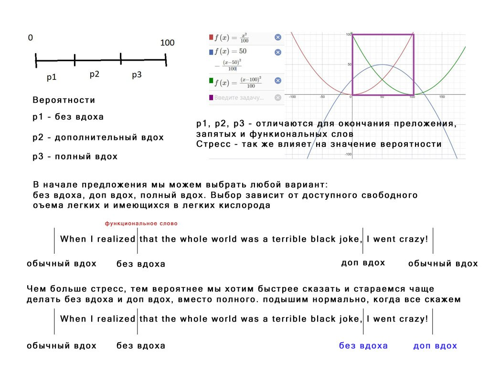
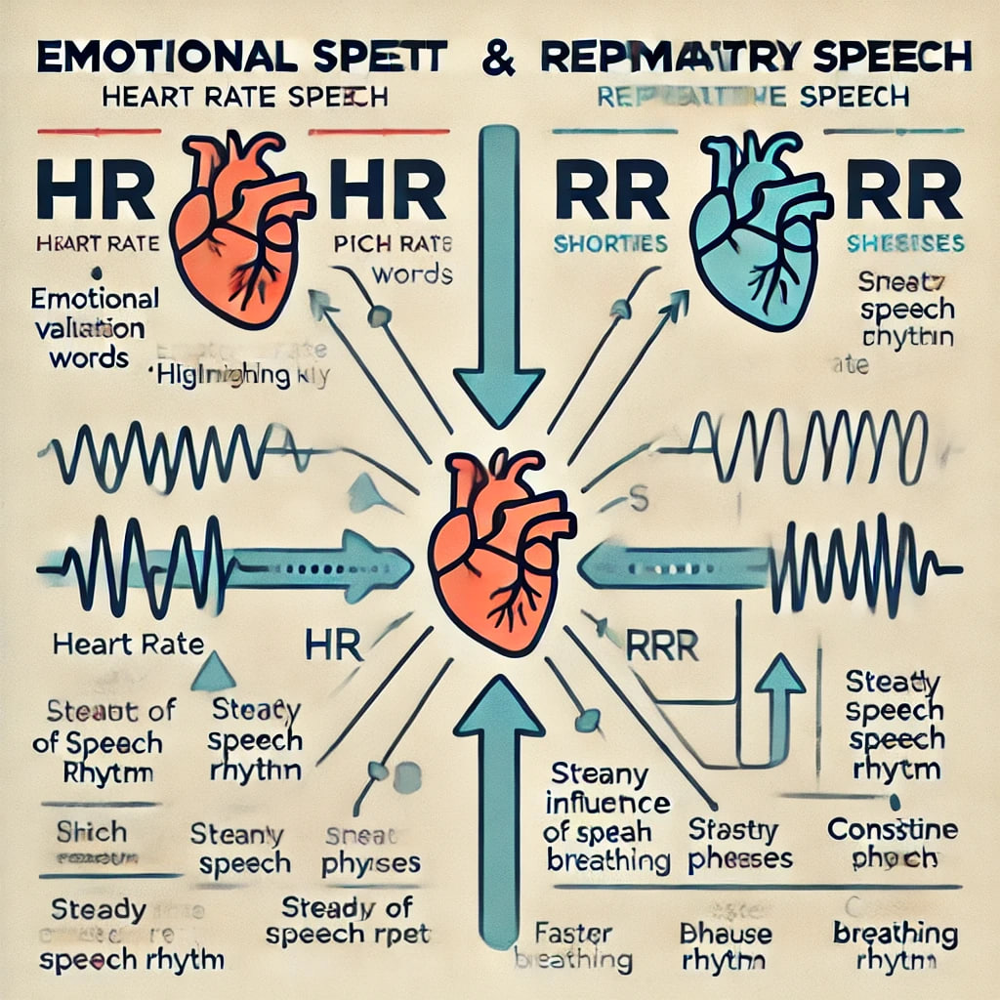
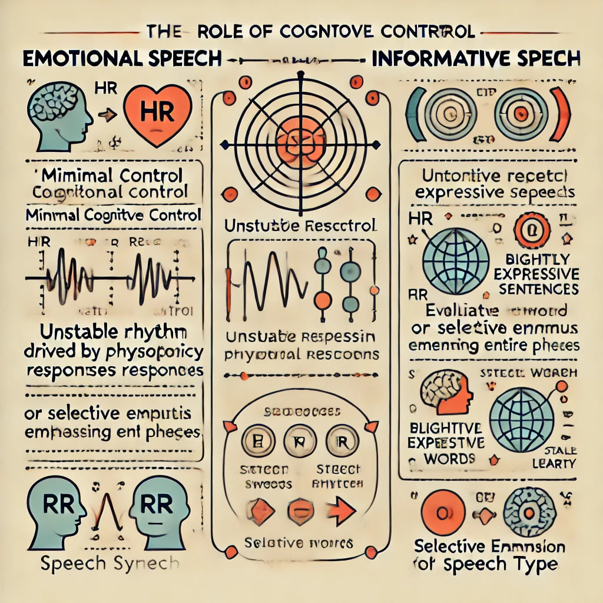
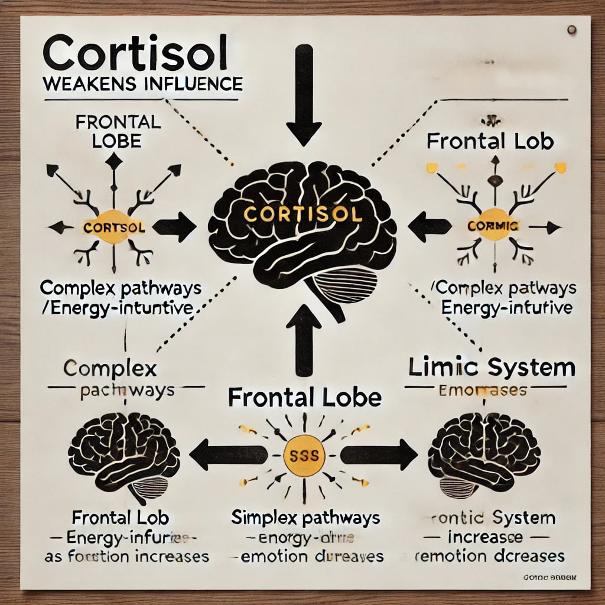
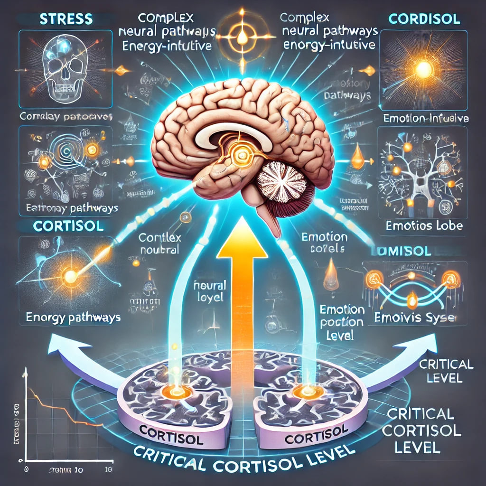

Есть два типа речи монологическая и диалогическая, рассмотрим их более подробно.

Диалогическая более короткие фразы, она более эмоциональная и служит для коммуникаций, для передачи эмоционального состояния. Монологическая служит для передачи информации. Для Диалогической главное передать информацию об эмоциональном состоянии, а для Монологической передать информацию. Для передачи информации нам нужно продумывать, что мы говорим. В то время как в случае диалогической мы не продумываем речь, так как передаем прежде всего текущее состояние эмоций или эмоциональную реакцию поэтому продумывание речи отходит на второй план.
Мы знаем, что ритм речи может быть стабильным и нестабильным. Речь идет о коротких промежутках стабильности и нестабильности на выдохе. То есть мы берем интервалы речи на одном выдохе. Который при следующем выдохе корректируется.
Диалогичская - эмоциональная, монологическая - информативная речь

Нестабильность связана с нарушением темпа, так как вдох-выдох заменяется на паузы без вдоха, дополнительный вдох, полный вдох-выдох – это нарушает паузы, влияет на скорость речи и на каждом новом шаге корректирует тема речи.
Мы сейчас говорим прежде всего ритме речи. Эмоции сильно влияют на ЧСС и ЧДД. Мы знаем из исследований, что при сильных эмоциях ЧСС коррелирует с периодами колебания высоты тона. А колебания высоты тона и задают ритм, через усиления слов.
Минимальный блок речи укладывается в цикл дыхания, и эмоциональная речь сохраняет стабильность в пределах одного блока. Однако:
В эмоциональной речи упор делается на передачу эмоций, а не на логическую структуру.
За счет этого ритм внутри блока может меняться, но его завершение привязано к дыхательному циклу.
Выбор между типами дыхания
Происходи хаотичность выбора между полным выдохом-вдохом, только вдохом или продолжением речи без дыхания — это ключевой момент эмоциональной речи:
Прерывается паузами в местах, определяемых логикой эмоционального выражения (слова-якори, пунктуация, конец предложения).
Игнорирует строгие правила дыхания ради передачи эмоций (например, краткие вдохи для продолжения фразы).

В случае стабильного ритма, он коррелирует с ЧСС и ЧДД. При синтезе такой речи, она звучит как монологическая, темп речи регулируется передаваемой в речи информацией. В этом случае идет регулирование мозгом текущих ЧСС и ЧДД. А проявление эмоций в речи прежде всего направлено на усиление значимой информации при ее передаче.
В случае диалогической речи - происходит бессознательная речь, без участия лобной доли. Поэтому прежде всего важны не слова, а передача ими эмоционального окраса, который сможет передать текущий ЧСС и ЧДД человека, или его эмоции через ЧСС и ЧДД. В этом случае темп речи будет нестабильный, так как задача человека максимально быстро передать информацию о состоянии системы (внешняя угроза, внешняя угроза как передача своего эмоционального фона).
Поэтому речь можно разделить на эмоциональную с нестабильным темпом речи, где важно передать эмоции - диалогическую речи. И на информационную со стабильным темпом речи, где важно передать информацию - монологическую речь.
Ритм и темп как инструмент
Ритм и темп становятся инструментом для ускорения передачи информации в эмоциональной речи, кажется точной.
Эмоциональная речь: Стремится максимально быстро донести смысл и эмоции, жертвуя равномерностью ритма.
Монологическая речь: Использует ритм и темп для четкой, логически выстроенной подачи информации.
Диалогическая речь как "бессознательная"

Лобные доли играют важную роль даже в диалогической речи, поскольку они участвуют в контроле поведения, выборе слов, реагировании на собеседника и регулировании социальных взаимодействий.
В диалогической речи действительно меньше времени на обдумывание, но она не полностью "бессознательная". Здесь скорее активируется система быстрой обработки информации, включая интуитивное и эмоциональное реагирование.
Бессознательная — это не значит, что мы не решаем совсем что сказать. Безусловно лобные доли играют роль, но играют иначе. В случае эмоциональной речи - она прежде всего зависит от текущего состояния организма, уровня гормонов, эмоционального фона. Лобные доли играют роль, но для того, чтобы лучше подчеркнуть эмоции.
Сама речь, будет сильно коррелировать с частотой сердца, которая в случае сильных эмоций регулирует периодичность тона речи. И от частоты дыхания, которая коррелирует с длительностью речи на выдохе и паузами на вдохе.
На каждом выдохе и вдохе происходит адаптация речи под новые параметры ЧСС и ЧДД. В случае эмоций. человек не задумывается о том, хватит ему воздуха или нет, что может привезти к рывкам. Именно это подразумевается под «бессознательно» речью. То есть происходит бессознательное задание темпа через ЧДД и ритма через ЧСС. А в случае монологической, человек продумывает, что скажет и регулирует свое дыхание, чтобы его хватило на передачу информации. Регулирует темп и ритм.
Влияние ЧСС и ЧДД на ритм речи
Эмоции напрямую влияют на ЧСС и ЧДД, а через них — на ритм речи.
ЧСС коррелирует с колебаниями высоты тона (pitch), что может усиливать акцент на ключевых словах и задавать ритмическую структуру.
ЧДД влияет на длину речевых сегментов: при быстром дыхании выдохи становятся короче, что уменьшает длину фраз.

В эмоциональной речи влияние ЧСС и ЧДД на ритм сильнее, поскольку организм ориентирован на реакцию. В информативной речи влияние ЧСС и ЧДД снижается за счет когнитивного контроля.
То есть в эмоциональной речи, ЧСС и ЧДД подстраивается под речь. В случае информативной речи, мы управляем ЧСС и ЧДД, чтобы подстроить под них речь.

Диалогическая речь (эмоциональная)
В случае эмоциональной речи (диалогической):
ЧСС и ЧДД доминируют над произвольным контролем.
Речь становится фрагментированной, поскольку человек говорит на выдохе, не всегда предугадывая, хватит ли воздуха. Это приводит к коротким, часто нестабильным фразам.
Колебания высоты тона (pitch) усиливаются, создавая акценты на определенных словах для передачи эмоционального состояния.

Монологическая речь (информативная)
В случае информативной речи (монологической):
Человек обдумывает, что хочет сказать, что требует когнитивного контроля. Это включает планирование дыхания, чтобы выдохи совпадали с длиной фраз.
Ритм становится более ровным, поскольку цель — передача информации, а не эмоций.
Высота тона изменяется в меньшей степени, так как эмоциональная окраска минимальна.
В монологической речи ритм на каждом выдохе стабилен, так как когнитивный контроль регулирует ЧСС, ЧДД и структуру речи.
Монологическая речь:
Эмоции присутствуют, но их задача — поддерживать передачу информации.
Ритм и темп стабильны в пределах выдоха.
Усиление затрагивает ключевые слова или фразы.
Диалогическая речь:
Эмоции доминируют, а информация передается через эмоциональный окрас.
Ритм и темп нестабильны, сильно зависят от ЧСС и ЧДД.
Усиление распространяется на весь эмоционально значимый отрезок речи.
Таким образом, одно и то же предложение действительно будет звучать по-разному в зависимости от типа речи:
Роль когнитивного контроля
В эмоциональной речи: когнитивный контроль минимален, а физиологические реакции (ЧСС и ЧДД) задают ритм, который часто нестабилен.
В информативной речи: когнитивный контроль максимален, он стабилизирует ритм, чтобы сделать речь более понятной.

Значит, при создании синтеза речи мы должны иметь два синтеза. Один для Диалогической речи для передачи эмоций, а второй для Монологической речи для передачи информации.
Для оценки типа речи, мы можем оценивать эмоции всей передаваемой информации в целом или текущий эмоциональный фон.
Если при анализе всего текста ни одна из эмоций не выделяется или нейтральная, значит это монологическая речь и надо использовать синтез для монологической. Если же какая-то эмоция преобладает, значит это Диалогическая речь и надо использовать синтез для эмоциональной речи.
Другой подход. Это учет текущего эмоционального фона, который завязан на истории эмоций, характере модели, контексте эмоций вопроса говорящего и контексте эмоций ответа модели.
Монологическая не означает, что эмоции будут отсутствовать и речь будет монотонной. Просто эти эмоции будут звучать иначе, делая упор на слова со стабильным ритмом и темпом. В то время, как в случае диалогической речи – из-за отсутствия стабильного ритма и темпа, будет разное разбиение речи на выдохи, и эмоциональный окрас слов будет ярко выражен. В то время как у монологической он будет присутствовать для усиления конкретных слов. "Я был поражен. Это яблоко было необычным фруктом." в случае монологической речи, будет усиление только слова "поражен". А в случае диалогической речи усилено будет все предложение.
Таким образом, одно и тоже предложение может быть произнесено по-разному, и соответствовать разному типу речи. В одном случае оно будет передавать эмоции, а в другом информации, где эмоции могут выделять какие части текста, усиливая внимание к ним и при этом передавать эмоциональный тон.
Например, Яблоко - это фрукт. (радостно)
Диалогическая (эмоциональная) речь: Яблоко! Этооооо фрукт, будет сказано с эмоциями радостно
Монологическая (информативная) речь: Яблоко это фрукт, будет сказано для передачи информации, где Яблоко или фрукт могут быть подчеркнуты некоторым выражением эмоции. При этом речь будет звонкой - ближе к радостной.
Эмоции в монологической речи

В монологической речи эмоции:
Присутствуют для акцентирования ключевых слов или фраз, которые несут главную смысловую нагрузку.
Эмоции в основном поддерживают структуру передачи информации, помогая слушателю выделить важные моменты.
Ритм и темп стабильны, чтобы облегчить восприятие информации.
Пример:
"Я был поражен. Это яблоко было необычным фруктом."
В этом случае усилено слово "поражен": возможно, pitch слегка повышается, или интонация становится напряженнее. Остальная часть текста произносится с ровным ритмом, сохраняя стабильность.
Эмоции в диалогической речи
В диалогической речи эмоции:
Перекрывают основную задачу речи — информация передается через эмоции, а не через структурную стабильность.
Все предложение окрашивается эмоционально, а ритм и темп становятся нестабильными, чтобы усилить впечатление.
Модуляции pitch, громкости и длительности выражают текущее состояние человека.
Пример:
"Я был поражен. Это яблоко было необычным фруктом."
Все предложение может быть подчеркнуто, с изменением высоты тона, паузами и растяжением слов. Например:
"Я был порааааажен! Это яблокооо... было необычным фруктом!"
Роль ритма и темпа
Ритм и темп играют ключевую роль в разделении типов речи:
Монологическая речь:
Ритм: Стабильный в пределах одного выдоха. Акцент на ключевых словах, а остальная речь ровная.
Темп: Регулируется для обеспечения комфортного дыхания и передачи информации.
Диалогическая речь:
Ритм: Нестабильный, часто меняется в зависимости от эмоций и дыхания.
Темп: Динамичный, может резко ускоряться или замедляться для эмоционального акцента.
Акценты в речи
В монологической речи эмоции подчеркивают конкретные слова, а в диалогической — все предложение:
Монологическая: акценты направлены на усиление смысла, выделяя ключевые слова.
Пример:"Я был поражен. Это яблоко было необычным фруктом."
Диалогическая: акценты распределены по всему предложению для передачи эмоционального состояния.
Пример:"Я был пораааажен! Это яблокооо... было необычным фруктом!"
Гнев, грусть и контекст эмоций
Разделение гнева и грусти.
Рассмотрим гнев, так как гнев передает информацию о причинах гнева. Значит несет в себе информационную подачу. С другой стороны, все зависит от силы гнева. При сильном гневе, человек не думает, что говорит и преобладают эмоции. Значит до какого-то уровня эмоций - речь монологическая, а после какого-то уровня диалогическая.
Что касается грусти, то тут все сглаживается низким уровнем ЧДД. Так как длинных интервалах интонация будет слабо выражена так как ЧСС низкий, потому что организм находится в режиме экономия энергии, мало расходует энергии и артикуляция будет слабой. Тут как с гневом, если эмоциональность берет верх на монологичностью, то мы получаем яркое проявление грусти, которая может быть выражена как горе (яркое проявление грусти).
Поэтому есть две группы эмоциональных состояний. Одни при сильном стрессе и сильном расходе энергии, когда артикуляция ярко выражена, радость, злость, страх. И группа эмоций - которые проявляются при низком расходе энергии, когда артикуляция слабо выражена и в этом случае ее колебания будут просто не заметны или очень слабые, что по своему характеру будет напоминать монотонную речь.
Разделение происходит через степень «эмоциональности». Если ее уровень выше какого-то значения, значит включается яркая артикуляция и верх берет эмоциональная речь. Иначе это будет на уровне монологической речи, даже если уровень громкости речи высокий.
Две группы эмоциональных состояний
Если уровень эмоции выше какого-то значения, то тут идет проявление яркой артикуляции.
Поэтому изначально указано, что монологическая речь точно так же проявляет эмоции. Если уровень эмоций ниже какого-то порога, то преобладает монологическая речь со своим видом выражения эмоции, которая может быть громкой, яркой, но в ней будет сохраняться монологический строй речи.
А если эмоциональный уровень выше какого-то порога, то включается диалогическая эмоциональная речь, с присущими ей правилами.
Таким образом эмоции могут выражаться при обоих видах речи, но проявляться они будут по-разному. В одном случае как диалогические, а в другом случае как монологические.
Эмоциональность как граница между типами речи

Мы не можем рассматривать амплитуду речи для разделения границы между двумя типами речи. Например, эмоциональная речь может быть сказана шепотом, и при этом будет диалогической. Мы знаем, что кортизол является модулятором лобной доли. При сильном уровне кортизола, влияние лобной доли уменьшается.

Лобные доли являются модулятором, усиливающие нейронные связи более сложных маршрутов, но более энергозатратных. Кортизол, ослабляет работу лобной доли.
Мы можем ввести условный уровень кортизола, который при каком-то пороге, словно отключает лобную долю, которая формирует логическую цепочку монологической речи и тогда доминирующую роль на себя берет лимбическая система, которая и проявляется как диалогическая речь. Уровень кортизола коррелирует со стрессом. Поэтому мы можем выразить его через уровень стресса, если он выше какого-то порога значит кортизола много.

Классификация контекстно-зависимых эмоций
Конечно, эмоциональная речь и уровень артикуляции зависят не только от эмоциональности, но и от контекста. Например, яркие эмоции могут подавляться в ситуациях, где важно сохранить контроль. Безусловно - это зависит от личных особенностей. Поэтому для каждой эмоции можно вести свой порог, выше которой она становится диалогической. Это аналогично, как обобщенный сигнал от разных участков мозга, который модулирует переключение для данной эмоции между двумя состояниями. В данном случае мы не получим динамической настройки этого уровня, а только статический. Но в целом мы можем считать, что нейропластичность зон мозга не проявляется мгновенно и зоны мозга не обучаются сразу новым стимулам. И поэтому на некотором промежутке (в нашем случае всегда) уровень переключения между двумя типами речи у каждой эмоции будет одинаковый. Итог, для каждой эмоции мы задаем свой уровень, по достижению которого тип речи данной эмоции переключается. Это позволяет описывать индивидуальные особенности говорящего.
Поэтому, мы не говорим о динамических изменениях. Так как регулирование этого уровня динамически в процессе обучения требует понимания работы каждой зоны мозга. Это требует проработки механизма обучения, что требует построения другой более сложной модели. Поэтому данные уровни статические, и описывают уникальные особенности говорящего.
Авторский разбор работы Сбера
Хотелось бы разобрать недавнее исследование, выводы которого опубликовал Сбер.
К сожелаению, я постоянно вижу как нехватка знаний и понимая, что скрывается за реальнымми данными LLM моделей, приводят к не понимаю поведения и выводов подобных исследований.
Пододобное я вижу постоянно как у Яндекс, Сбер и вообще в ML области. Когда отсуствие знаний в других областях компенсируется вольными трактовка.
И так, что на самом деле скрывается за результатом исследования Сбера? Что не смогли увидеть авторы исследования?
Для понимания этого, надо понять как работает наш мозг и как взаимодействуют его зоны.
Для понимания результатов данного исследовавния, нам нужно углубиться в
- лимбическую систему
- левое полушарие
- лобная доля
- взаимодейсвтие между ними и механизмы доминиронивания
Лимбическая система, отвечает за первыичные реакции. Не те, что на уровне рефлексов, а те что мы может приобрести для избегания опасности при адаптации к окружающей среде.
Например, страх. Это не одна зона, а несколько, которые проходя маршрут друг од друга. И сключают в себя множество паттернов поведения, начиная от разлиных видов агрессии и заканчивая замиранием. Это сложный механизм, мозг в мозге, отвечающий за выживание, поиск пищи, помогающий в размножении и т.д.
Или реакция на внетреннее чувство тревожноси или спокойствия.
Нас интеересует здесь один из механизмов взаимодесвтия через различные гаромоны, белки и прочие вещи. Которые чаще всего всего играют роль модуляторов (усиливают сигнал) или выключателей каких то процессов. По сути, они являются чем то вроде биологических сообщений, говорящих различным зонам мозга и органам как себя вести. А у тех, висит обработчик в ввиде рецепторов, которые подписаны на определенные сообщения (например какие то гормоны), и имеют свой механизм реакции на них при получении сообщения.
Когда лимбическая система активируется, она постоянно просит гиппокамп и другие части, разослать другим зонам нужные сообщения.
Двумя такими важными сообщениями являются норадреналин и картизол. Я не буду рассматривать другие, так как моя задача донести суть. Иначе данный процесс можно детализировать долго, и это уже выходит за рамки данной статьи. А нам важен общий смысл и понимание.
Норадреналин помогает закрепить нейронные связи. Он выступает в данном случае модулятором. Если на какую то реакцию было выработано много норадреналина, значит это какая то важная вещь для выживания, которую следует лучше замомнить. Поэтому норадреналин в этом случае усилит сигнал, и вместо условного "0.1" будет "0.7". Это своего рода фильтр важной информации.
Норадреналин получает из адреналина. Как первичная обработку каких то ситуаций, до того как это дойдет в высшую нервную систему.
Например, если напал хищник, то будет выработан адреналин и далее норадреналин. Что привдет к тому, что ситуация будет запомнена.
В тоже время кортизол, наоборот, играет роль разрушителя различных связей и тормозящего модулятора.
Он вырабатывается при длительном стрессе. В этом случае, вероятно наши связи не являются эффективными и следует их ослабить или разрушить, чтобы в дальнейшем записать новые.
К примеру так, лимбическая система конкурирует с лобной долей, за право доминирования. Кортизол тормозит работу лобных долей, ослабляя их участие в общем процессе.
Так для чего нужны лобные доли? Они играют важную роль, в закреплении поведенческих паттернов для адаптации под окружающие условия.
Если говорить простым языком, то как вести себя в обществе, стоит ли обманывать, как доказать теорему и т.д. За всем этим стоит сложный паттерн поведения.
Задача лобной доли, усилить нужные сигналы например в полушариях. И вместо короткого маршрута в 3 нейрона, сигнал пойдет по длинному маршруту в 30 нейронов.
Задем это нужно?
Длинный маршрут, это более сложное, взвешенное решение. Часто имеющее длинные нейронных цепочки. Но как минус, сигнал идет дольше и ресурсов на это требуется гораздо больше.
В то время как короткий маршрут, позволяет давать быструю реакция на конкретную ситуацию. Вижу Васю - бью в морду. Без сложного анализа, заслужил Вася сейчас это? Что будет если так сделать? Не сделаем ли мы себе хуже?
Весь этот анализ пропадает. Так как сигнал идет через условных 3 нейрона.
То есть в этом случае, понимание кто такой Вася остается, понимание что в морду блить плохо остается. Но вот связать это воедино - уже нельзя.
Примером може быть случай в доме престарелых деменции в США, когда один пжилой старик лет 90, после того как у него случилось нарушение лобной доли, изнасиловал бабушку. Так как в этом случае, сложный аналих дейсвтий больше не работал. Хотя при этом, по отдельности человек не перестает понимать правила, но связать их не может.
Другим простым примером являются дети и подростки. Так как лобная доля развивается до 25 лет. Отличный пример эксперимент с зефиром. Так как лобная доля еще не развита, то ребенок не может удержать и не взять зифирку спустя какое то время.
У животных - лобные доли развиты еще хуже, у тех же объезян моментально включается реакция при виде еды, даже если это решение даст худший результат в дальнейшем.
И так, что же происходит?
Так как в экстренной ситуации, нам нужна быстрая реакция, то нужно отключать лобную долю и переходить на быстрые связи. Поэтому лобмные доли имеют рецепторы на кортизол, и при его обнаружении ослабевают свои связи. За счет этого, сигнал идет по быстрым маршрутам к примеру в том же левом полушарии.
Таким образом, как только лимбиечская система в случае опасности начинает вырабатывать кортизол. Кортизол вызывает выброс глюкозы в кровь и сужает артерии, что важно во время стресса на длинной дистанции.
Рецепторы лобной доли видять кортизол, и ослабевают свой сигнал. Теперь сигнал в неокортекс идет не по длинному, а по короткому маршруту.
Таким образом, при разных эмоциях и внешних реакциях мы получаем разное поведение. В данном случае эмоциональное поведение - это лишь внешнее проявление, по которому мы можем оценить реацию друого.
Возникает ситуацию, что разная ситуация создает разное поведение и разные маршруты между лобной долей и полушариями. Так как разное воздействие кортизола. Другие же горомоны, так же оказывают влияне на усилиение закрепления сигнала, или усиление каких то отдельных зон мозга, чтобы формирует разную поведенческую реакцию.
Но для нас здесь самое главное - что при сильном стрессе, мы видим паттерны повдения как следсвтие работы лимбической системы.
В то время как при малой стрессе или его отсуствии, мы видим паттерны поведения при работе лобных долей.
При любой сильной эмоции, уровень стресса растет, и вместе с ней уровень кортизола.
И здесь не играет роль, радость это или страх, дипрссия или оптимизм. При сильной эмоции - это стресс, длительный стресс - это кортизол. Кортизол - это паттерны поведения лимбической системы, как ответные реакции на окружающую нас ситуацию.
Так что мы видим в результате исследования Сбера?
Почему модели, обученные при разных эмоциях проявляют разное поведение?
Я думаю вы уже и так догадались. Все дело в том, что LLM модели на самом деле обущаются обобщению работы всей этой системы в целом.
То есть они демонстрируют работу любической и лобных долей, где в качестве индикаторы выступают эмоции. Которые являюстя внешим провлением различных гормонов и различных зон мозга для окторых они усиливают или ослабевают.
То что мы видим, это если мы обучаем модель на сильно эмоциональных текстах или обучающий был слишком эмоционален, то модель будет прежде всего демонстрировать работу лимбической системы и ее паттернов поведения.
Если же эмоции будут более сухими или не ярко выраженные, то мы увидим работу лобной коры.
При этом не имеет значение, какие эмоции ярко выраженны радость или страх, в обоих случаях при сильной эмоции мы получаем в качестве результата работу лимбической системы и ее поведение на реакцию. И так как система получаетс статичной, то в целом мы получаем данную реакцию на любые данные. Поэтому в аналитиечских системах, при обучении моделей надо избегать эмоциональных данных.
Ярким примером, является страх, которые Сбер описал как хаотичный результат.
В реальности, как уже было сказано, страх гораздо сложнее. Его нельзя просто определеть под одно обощение. За страх у нас отвечает огромная система и кучи зон мозга, где результатом может быть разное поведение. Так как это будет разная форма страха.
И в этом случае, так как Сбер не корректно определял страх, то и предсказать итоговое поведение он не мог.
Например, сказать шепотом от страха, прокричать от страха, спросить дрожащим голосом от страха. Это все все обобщенно можно назвать страхом. Но все это совершенно разные форма его провявление, разные сиутации, разное поведение. Это на самом деле не один и тот же страх. В данном случае нельзя обобщать, иначе мы теряем контекст и получаем непредсказуемый результат. Так как для каждой формы "страха", будет свой патерн поведения. Что собствено Сбер и показал в своем исследовании. Что если не правильно обобщить данные - то получаем хаотичный результат.
Какой на самом деле важный итог можно сделдать из исследования Сбера, что они не смогли увидеть?
То, что обучение LLM на эмоциональных данных, позволяет лучше понять паттерны поведения лимбической системы на более абстрактном уровне.
Где мы можем связать работу лимбической системы и соовествующими шаблонам поведением человека при их проявлении.
Так как проводить такой анализ на живых людях, гораздо сложнее и затратнее.
Это главные выводы, которые должны были сделать в Сбере после исследования, если бы обладали всеми необходимыми знаниями.
В целом тут краткое объяснение того как и что происходит. Надеюсь что медики и нейробиологи не закидают меня камнями, за не полноту информации. Так как моей целью было не пересказать весь курс нейробилоии и мед вуза, а показать в целом принципы работы донести некоторые важные мысли.
Я всегда говорил и повторю. ML и тем более LLM как и любые нейронные сети - это не только математика. Они неразрывно связы с нейробилогией, физикой, биологией в целом, лингвистикой, фонетикой и другими наукам.
Без изучения этого хотя бы частично, ML разработчик не сильно будет отличаться от программиста, который расставляет кнопочки на форме. Только тут, вместо кнопочек сетки. Сетки - это черный ящик лишь для того, кто в реальности не понимает область, в которой пытается их применить.